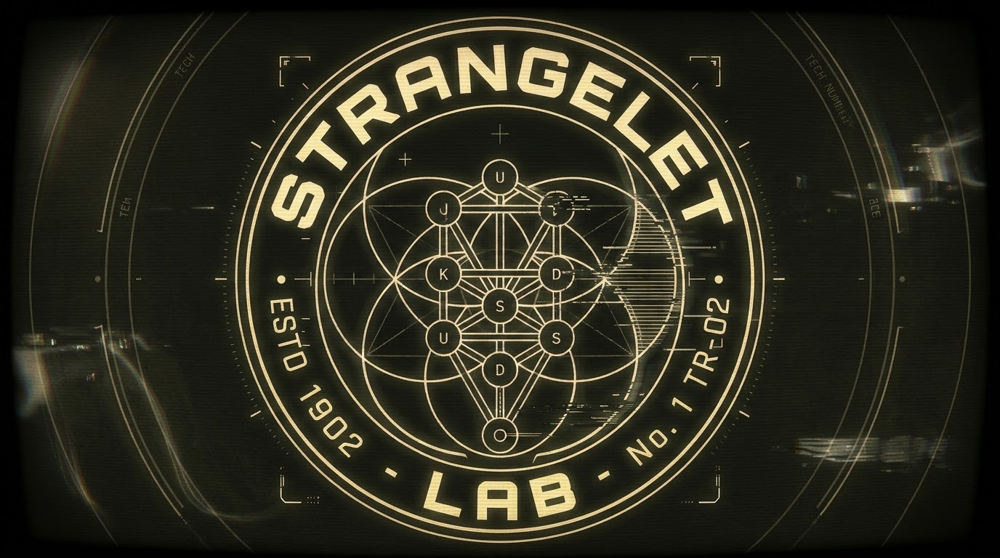
Quantum-Acoustic Production Workstation & Offline-First Particle Collider DAW.
Inspired by Georges Méliès (1902), David Lynchian Tape Realism & High-Energy Particle Physics.
http://localhost:5001).
Kobold.cpp now serves as the unified, lightweight engine for ACE-Step 1.5 loop diffusion,
YuE 2.0 full-track synthesis, and offline GHOST sensei intelligence through direct REST endpoints
(/api/extra/music/prepare and /api/extra/music/generate).
No complicated node graphs, no Python dependency hell, lower idle VRAM, and zero friction.
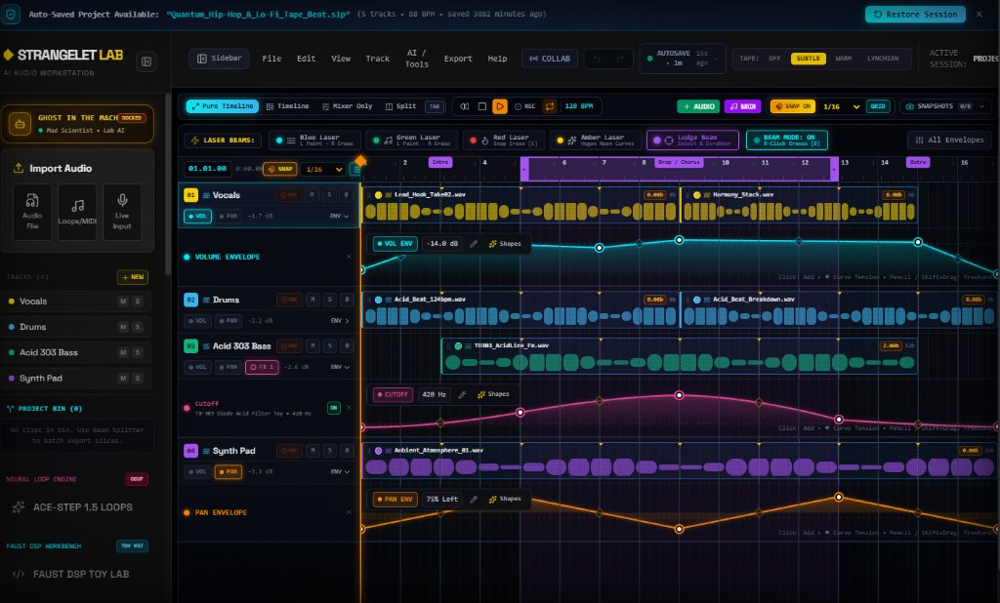
Edge-to-edge arrangement workspace with micro-transport, hardware-accelerated 60fps cursor, and multi-track audio lanes with real-time automation.
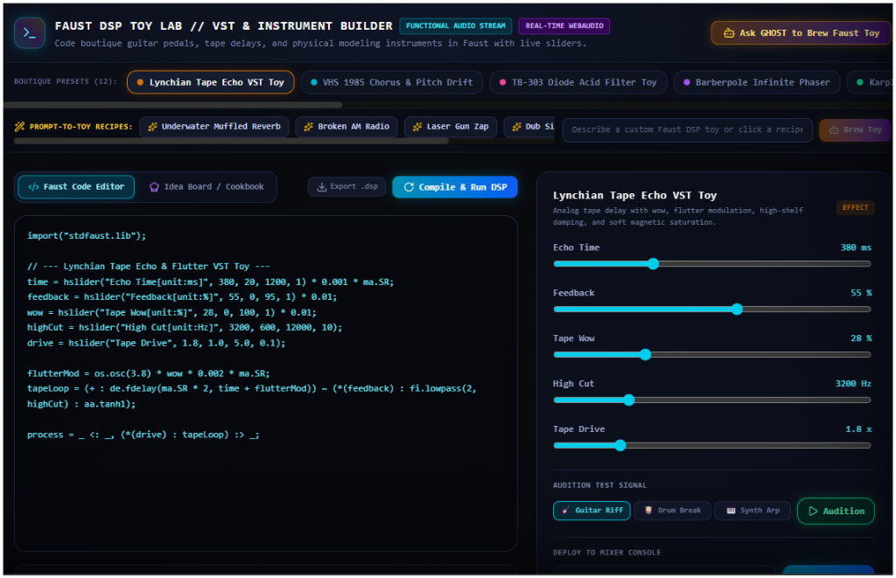
Code boutique guitar pedals, tape delays, and physical modeling synths in Faust (Functional Audio Stream) compiled directly to WebAssembly.
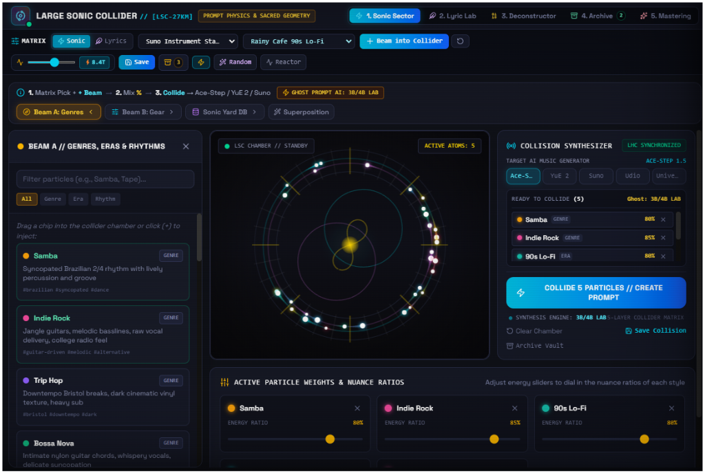
Superconducting 27km particle ring simulating stems as relativistic charged hadrons. Sound particles collide at sub-light speeds to generate new textures.
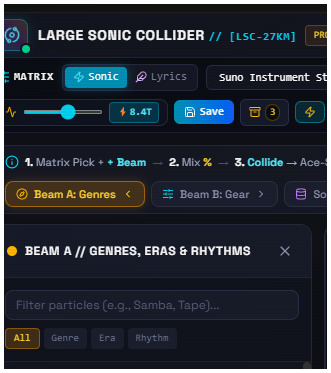
Multi-sector injection hub controlling particle charge (8.4 Tesla), collision cross-section, and musical style particles.
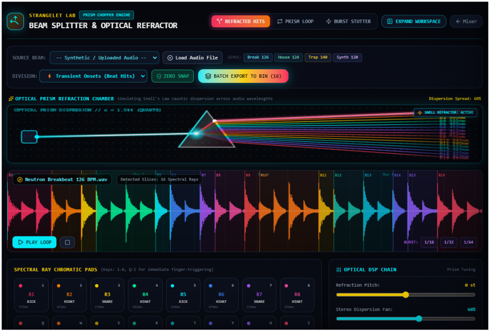
Simulates Snell's Law caustic dispersion across audio wavelengths using a virtual quartz prism (n = 1.544) to slice beats into spectral rays.
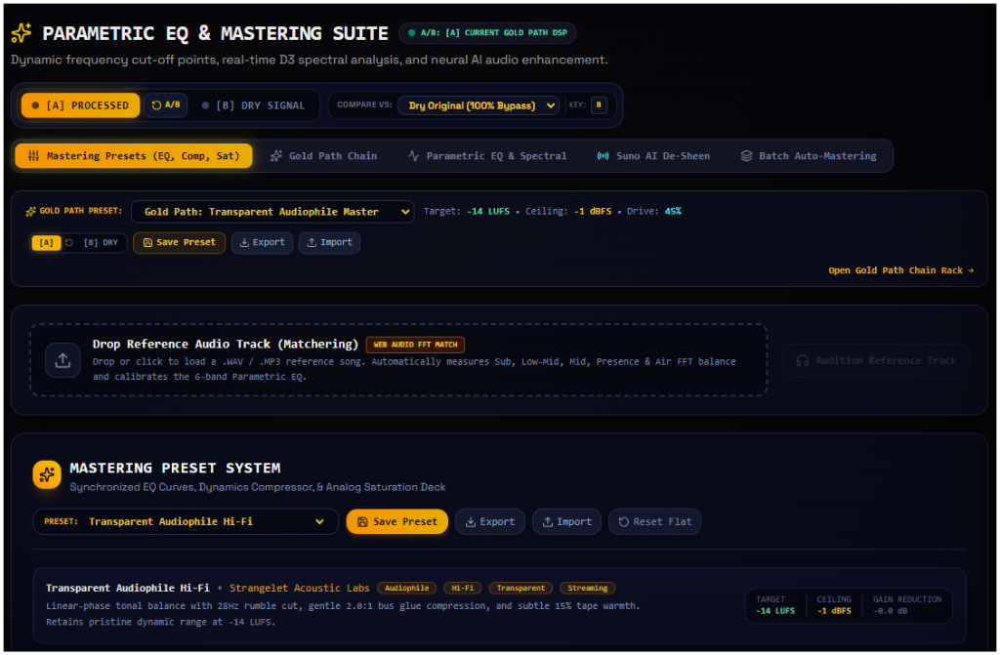
6-stage Gold Path audiophile mastering deck with real-time D3 FFT spectral analysis and AI reference track auto-EQ matching.
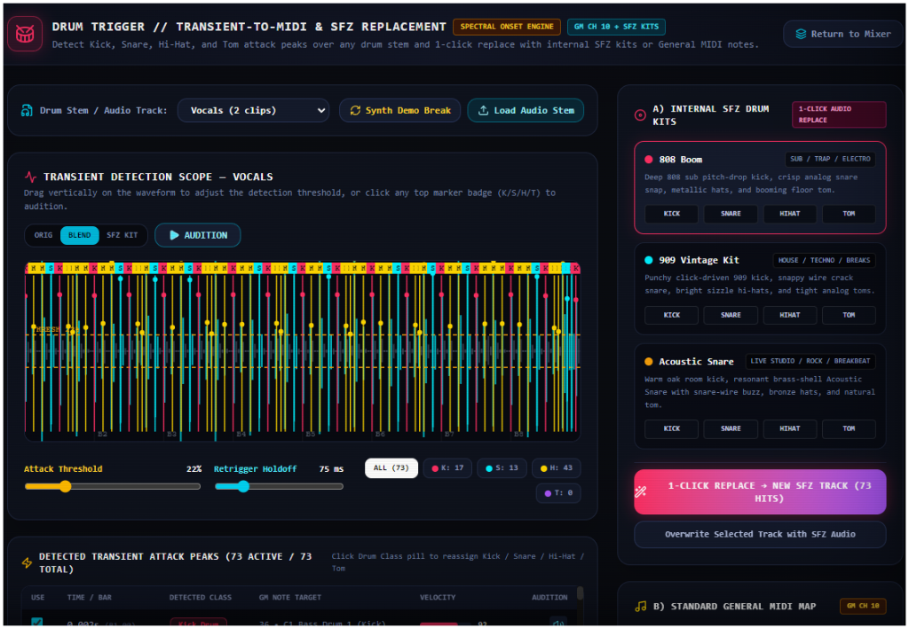
Detects Kick, Snare, Hi-Hat, and Tom attack peaks over any audio stem and replaces them with 1-click vintage SFZ drum samples or MIDI.
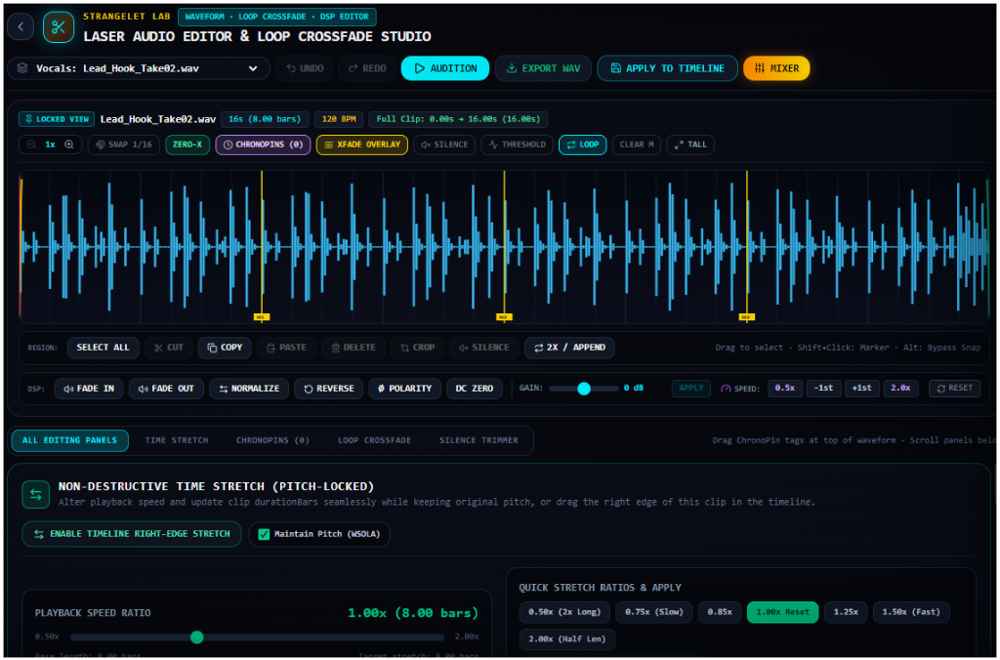
Precision sample editor with pitch-locked WSOLA time-stretching, Chronopins, loop crossfade studio, and zero-crossing waveform alignment.
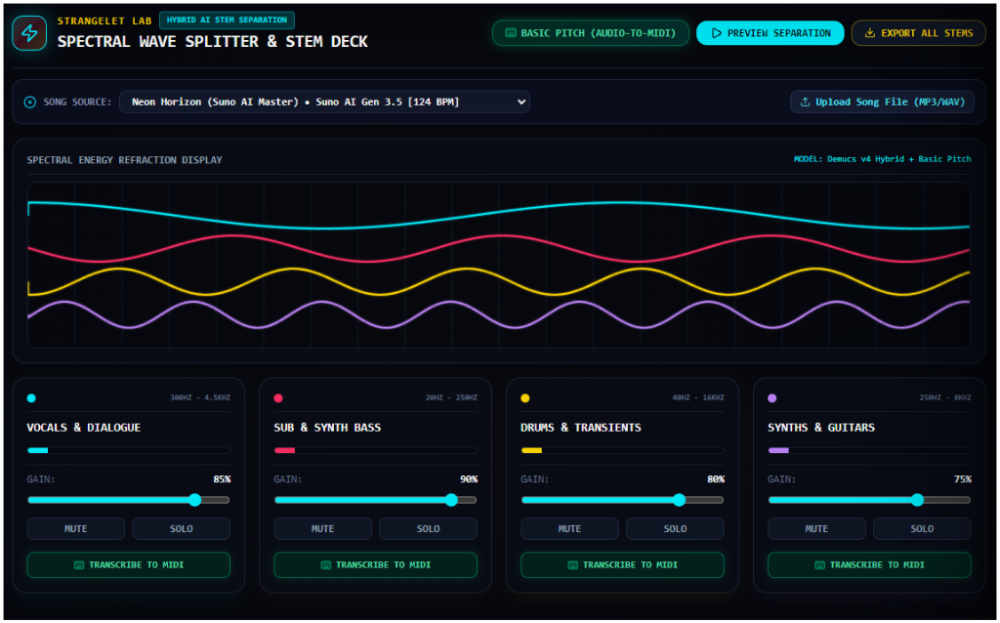
Separates full songs and AI generations into 4 isolated stems powered by Demucs v4 Hybrid + Spotify Basic Pitch neural nets.
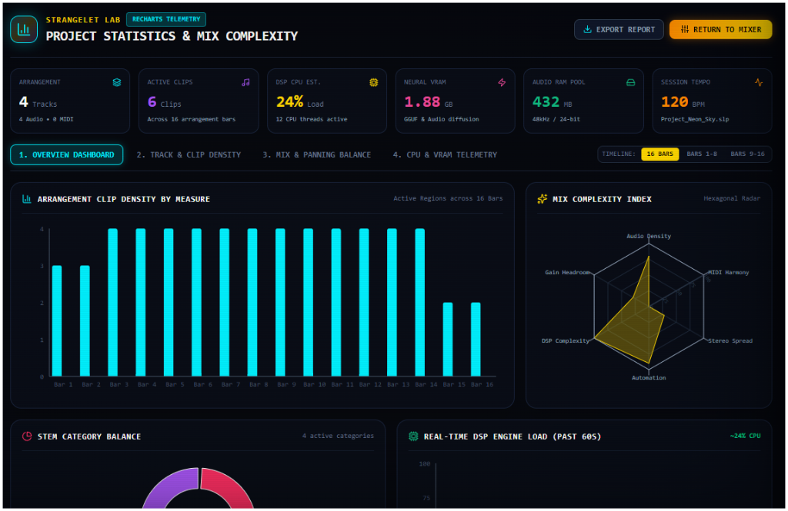
Real-time radar telemetry analyzing arrangement density, dynamic range, harmonic saturation, stereo width, and frequency balance.
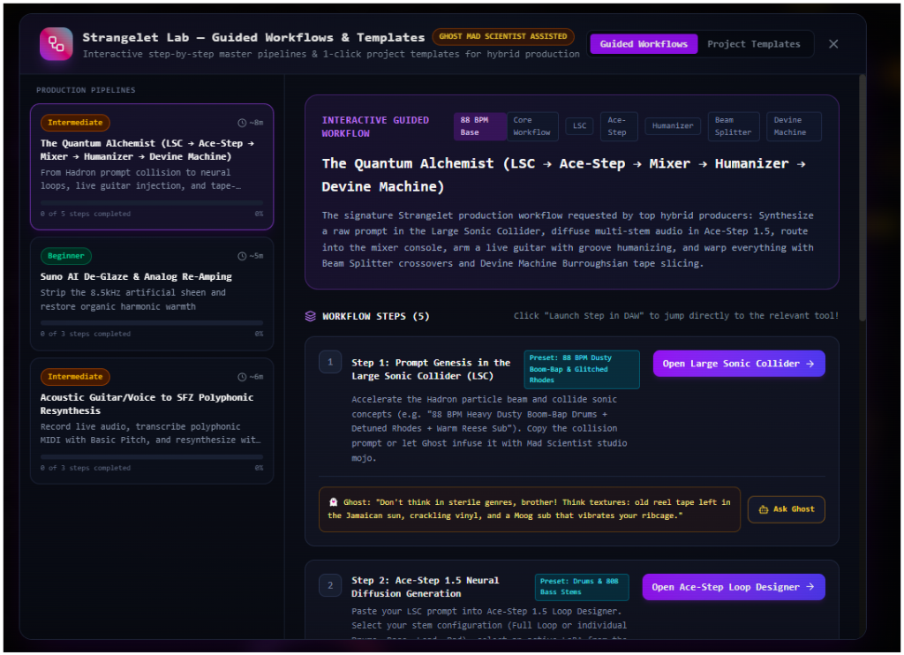
Pre-engineered production pipelines guided by GHOST to take ideas from raw prompts to radio-ready mastered tracks.
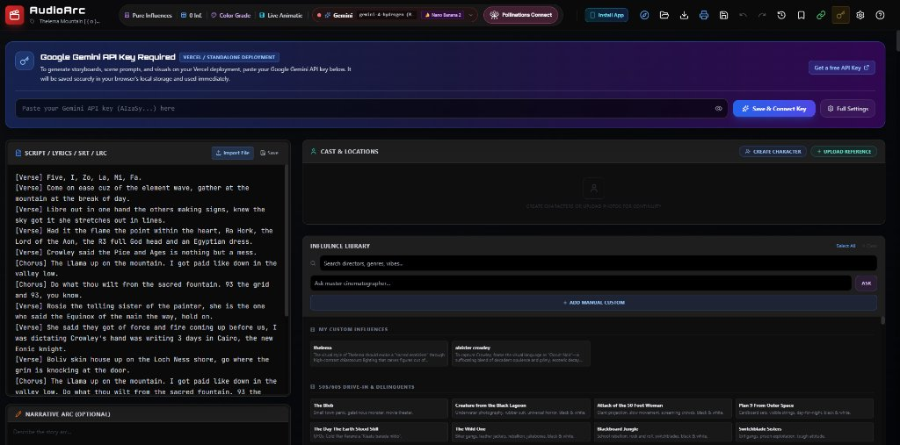
Direct roundtrip integration across the Strangelet Creative Network for visual music video storyboarding and automated beat-cutting.
| KEYBOARD SHORTCUT | ENGINE ACTION | CONTEXT |
|---|---|---|
| Space | Start / Pause Master Audio Transport | Global Engine |
| Tab | Toggle Arrange View (Pure Timeline) / Console View (Mixer) | Workspace Layout |
| B | Flip A/B Audition (Active Master vs. Reference Track / Dry Signal) | Mastering Suite |
| Ctrl + Z / Ctrl + Y | Undo / Redo Timeline, Parameter & DSP Edits | Global History |
| Ctrl + S | Save Project Snapshot (.slp file) |
Session Management |
| 1 – 8 | Recall Mix Snapshots (Mixer) / Trigger Chromatic Pads (Beam Splitter) | Mixer & Slicer |
| L | Toggle Transport Loop Region | Timeline Transport |
| Alt + G | Toggle GHOST (The Ghost in the Machine) Terminal | AI Companion |
| Ctrl + E | Open Batch Stem Export (.WAV ZIP) | Stem Deck |
RTX 2060, 3060 6GB, Apple M 8GB.
Recommended: Llama 3.2 3B or Qwen 2.5 3B/7B Slim via Kobold.cpp. Memory scavenging with single-stem processing.
RTX 3070, 4060, Apple M1/M2/M3 16GB.
Recommended: Qwen 2.5 7B or Llama 3.1 8B Q4. Parallel DSP filters, live FFT analysis, and Kobold.cpp ACE-Step loop generation.
RTX 4070 Ti, RTX 4080 16GB, Apple M Pro 24GB+.
Recommended: Qwen 2.5 14B or Llama 3.1 8B Q8_0 High-Def. Resident Demucs FP16 stems in VRAM and 60fps telemetry.
RTX 3090, 4090, Apple M Max/Ultra 64GB+.
Recommended: YuE 2.0 dual-track 7B full-song synthesis and un-quantized FP16 GHOST LLMs with zero disk offload delays.